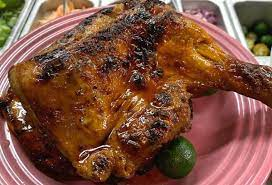

Chicken Inasal

A Filipino chicken dish marinated in a mixture of calamansi, pepper, coconut vinegar and annatto, then grilled over hot coals while basted with the marinade
INGREDIENTS
- ½ cup prepared banana ketchup
- ¾ cup lemon-lime soda
- ½ cup soy sauce
- 4 cloves crushed garlic
- 2 tablespoons brown sugar
- 1 teaspoon freshly ground black pepper
- 1 medium lemon, juiced
- 2 ½ pounds, chicken leg quarters
- 3 tablespoons reserved banana ketchup
- 1 tablespoon vegetable oil
- 1 teaspoon fish sauce
STEPS
- Transfer ½ cup banana ketchup to a bowl and add lemon-lime soda, soy sauce, garlic, brown sugar, black pepper, and lemon juice for the marinade. Whisk until combined. Add halved chicken thighs and toss to coat.
- Cover with plastic wrap and marinate in the refrigerator for 4 to 18 hours.
- When you are ready to cook the chicken, combine reserved 3 tablespoons banana ketchup, soy sauce, brown sugar, oil, and fish sauce in a small bowl for basting sauce.
- Preheat a charcoal grill until coals are very hot.
- Remove chicken from the refrigerator and place on metal skewers, folding in half with the smooth side on the outside, the rougher side folded in.
- Grill chicken over hot coals until no longer pink in the centers, 15 to 20 minutes, turning and basting every 2 to 3 minutes. Serve with accumulated juices or extra basting sauce.